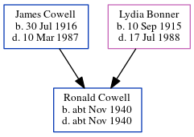

Ronald J Cowell cNov 1940 - c1940
[ Home ] | [ Calendar ] | [ Surnames Index ] | [ Errors ] | [ Family History ]The child of James Cowell (an ironmonger's shop's assistant) and Lydia Bonner, Ronald Cowell, a cousin on the mother's side of Nigel Horne, was born in Eton, Buckinghamshire, England c. Nov 19401,2,3.
He died on the same day3,4 (oct/Nov/Dec).
Parents
- James Sidney was born on 30 Jul 1916
- Lydia Florence was born on 10 Sept 1915
Citations
- England & Wales births 1837-2006 - Findmypast
- England & Wales, Birth Index: 1916-2005 Online publication - Provo, UT, USA: The Generations Network, Inc., 2008.Original data - General Register Office. England and Wales Civil Registration Indexes. London, England: General Register Office. © Crown copyright. Published by permission of the Cont
- England & Wales, Death Index: 1984-2005 Online publication - Provo, UT, USA: The Generations Network, Inc., 2007.Original data - General Register Office. England and Wales Civil Registration Indexes. London, England: General Register Office. © Crown copyright. Published by permission of the Cont
- England & Wales deaths 1837-2007 - Findmypast
Media
England & Wales deaths 1837-2007 Transcription - BMD-D-1940-4-AZ-000220-098
England & Wales births 1837-2006 - BMD/B/1940/4/AZ/000210/148
Family Tree
Map
Generated by ged2site. Last updated on Jul 3, 2024